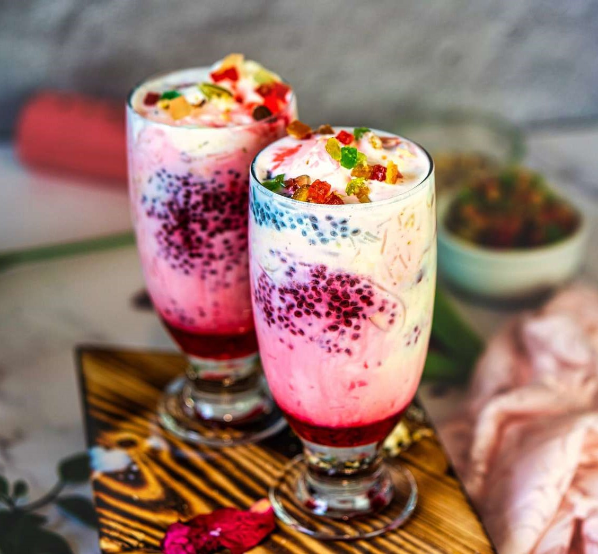

(F)
alooda
Menu

Ingredients:
2 cups milk
1/4 cup falooda sev (vermicelli)
2 tablespoons sugar (adjust to taste)
1/2 cup soaked sabja seeds (basil seeds)
1/4 cup soaked sweetened rose syrup
1 scoop vanilla ice cream
Assorted chopped nuts and fruits for garnish
Method:
Step 1 - Preparing Falooda Sev:
Boil water in a pan and add falooda sev. Cook until sev is soft and transparent. Drain and rinse with cold water. Keep aside.
Step 2 - Assembling Falooda:
In serving glasses, add soaked sabja seeds, cooked falooda sev, sweetened rose syrup, and sugar. Pour chilled milk over it.
Step 3 - Garnishing:
Top with a scoop of vanilla ice cream and garnish with assorted chopped nuts and fruits.
Step 4 - Serving:
Insert a long spoon into the glass and serve immediately. Enjoy this delightful Falooda!